Institut de Management des Arts et des Métiers (IMGAM) — En cours
Institut de Management des Arts et des Métiers (IMGAM) — 2025
EducPlus — 2022
Conseiller Technique Haut Débit → Conseiller Technique Service Universel | Janvier – Juillet 2026
Conseiller Technique Haut Débit — Janvier à Avril 2026
Conseiller Technique Service Universel — Avril à Juillet 2026 (promotion interne)
Bénévole — 2022
Analyse financière • Audit interne • Gestion comptable • Contrôle de gestion • Gestion financière • Gestion des approvisionnements et des stocks • Passation des marchés
Diagnostic technique • Gestion d'incidents • ADSL • Fibre • Livebox • Orange TV • Décodeurs Orange • VoIP • ToIP • Téléphonie fixe • Messagerie Orange • Relation client
CRM Orange • CRM GP • Pulse (suivi des KPI) • Workday • Microsoft Teams • Microsoft Excel • Microsoft Word • Microsoft Access
Sage 100 Comptabilité • Sage 100 Gestion Commerciale • Dext • Full Ibiza • Odoo
HTML • CSS • JavaScript • TypeScript • React • Next.js • Node.js • Python • Tailwind CSS • Git • GitHub • Supabase • Vercel • Cloudflare
Kali Linux • Reconnaissance • Audit de sécurité • Pentesting (formation)
Malagasy (langue maternelle) • Français (courant) • Anglais (B1) • Espagnol (A2) • Japonais (N5)
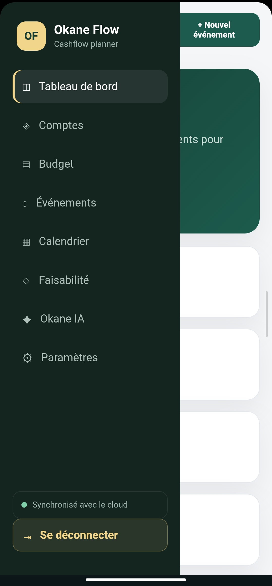
Application de gestion financière. Conception d'une application numérique dédiée au suivi et à la gestion des finances personnelles et à l'étude de faisabilité d'un projet.
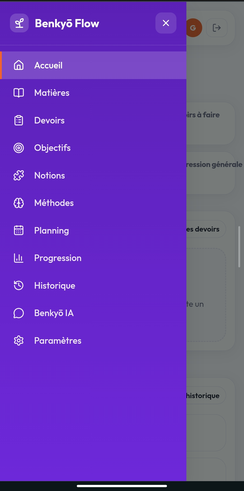
Application d'apprentissage combinant productivité, apprentissage et assistant IA (Benkyō IA) afin d'accompagner l'utilisateur dans son parcours.
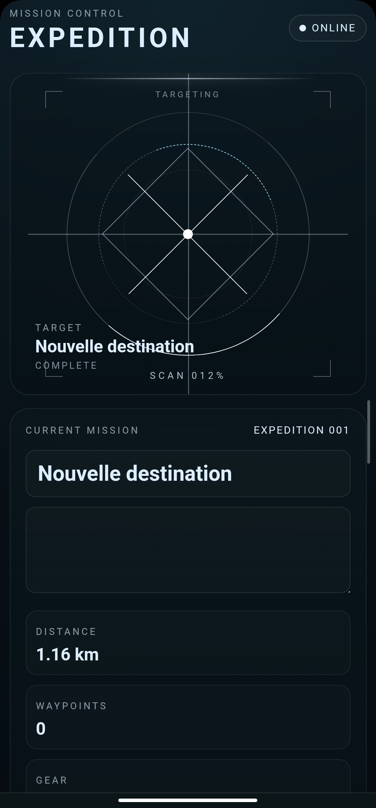
PWA à esthétique HUD sombre cyan : interface de commande de mission avec radar de ciblage animé, panneau de missions et journal de bord.
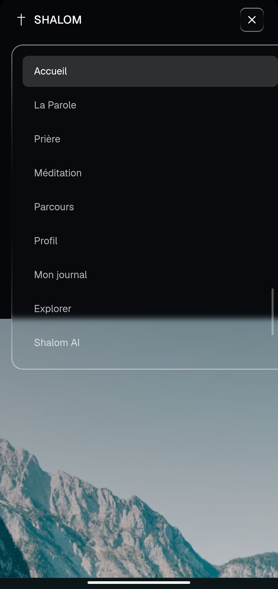
PWA chrétienne avec esthétique Liquid Glass : Bible, prière, méditation, parcours 40 jours, journal spirituel et bibliothèque thématique.
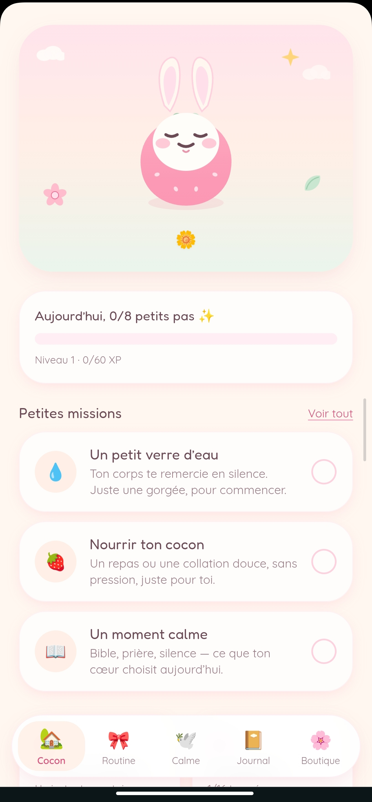
PWA mobile-first de bien-être quotidien, avec système de progression et de récompenses.
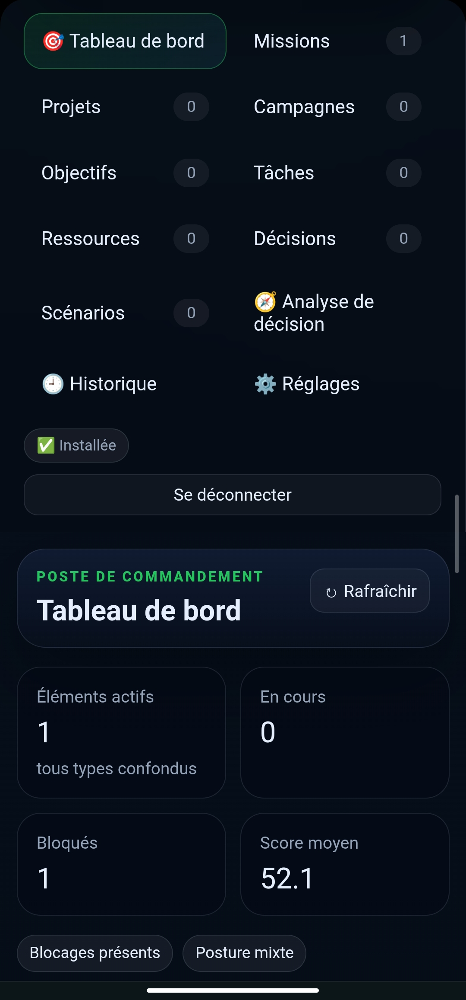
Centre de commande personnel. Non déployé pour le moment.
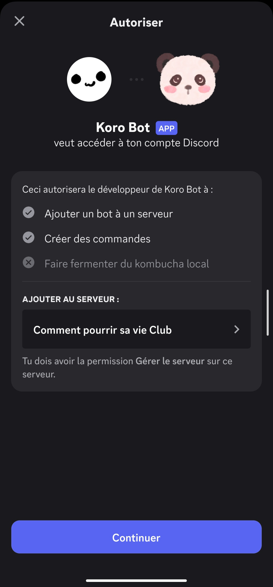
Bot Discord personnalisé, déployé et exécuté directement depuis un environnement mobile via Termux.
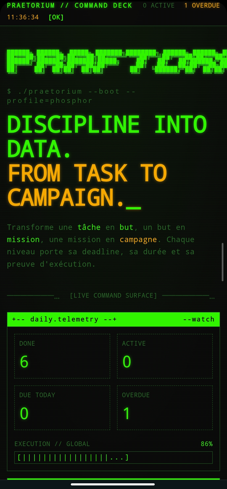
Projet personnel en cours de finalisation.
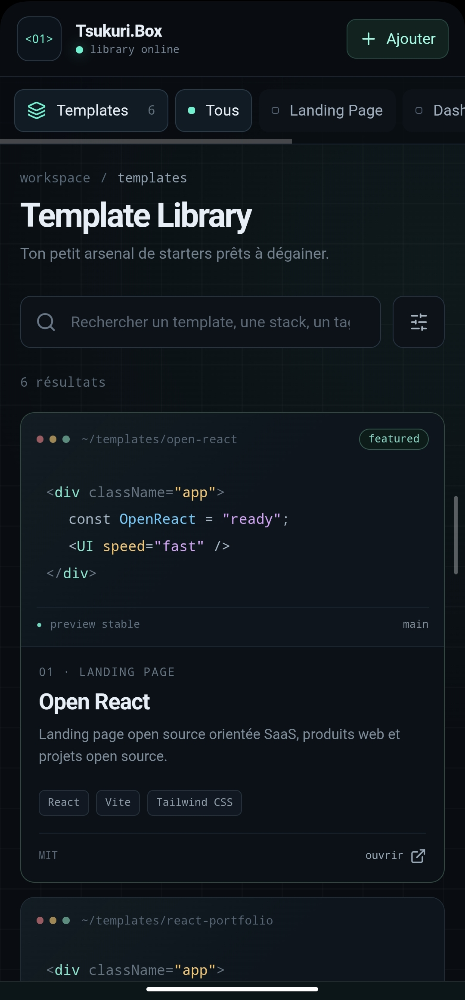
Bibliothèque personnelle de templates et sources de sites, présentée comme un explorateur de fichiers pour développeur.
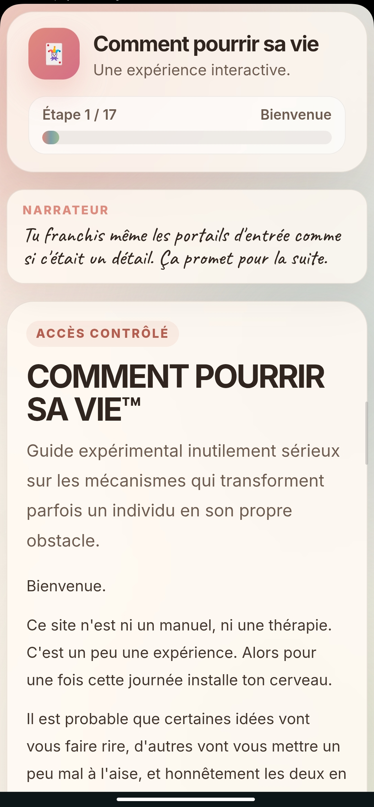
Projet personnel en cours de finalisation.
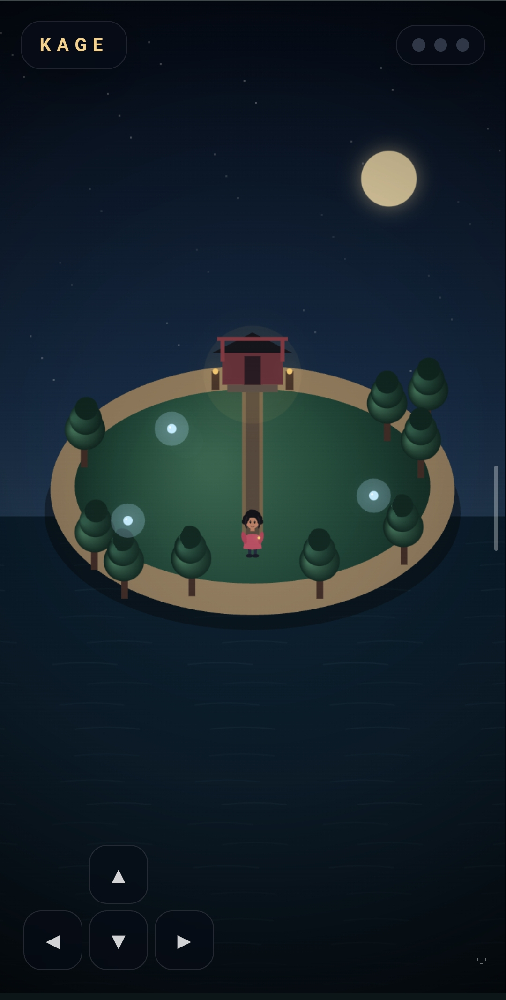
Projet personnel en cours de finalisation.
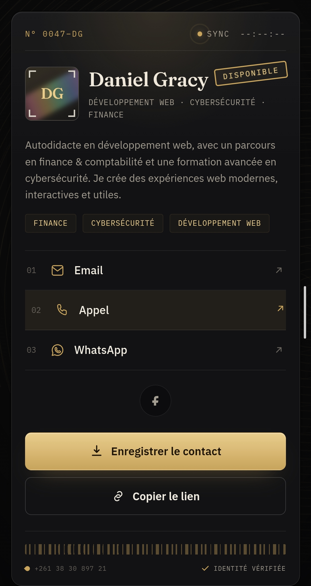
Carte de visite virtuelle interactive.
Voir la carteLe CV n'est pas encore chargé sur cette page.
Ouvrir cv.pdfPortfolio de Razafinjaka Rabary Daniel Gracy.
Étudiant en Master Finance, expérience en support technique chez Concentrix × Orange France, profil polyvalent finance / tech.